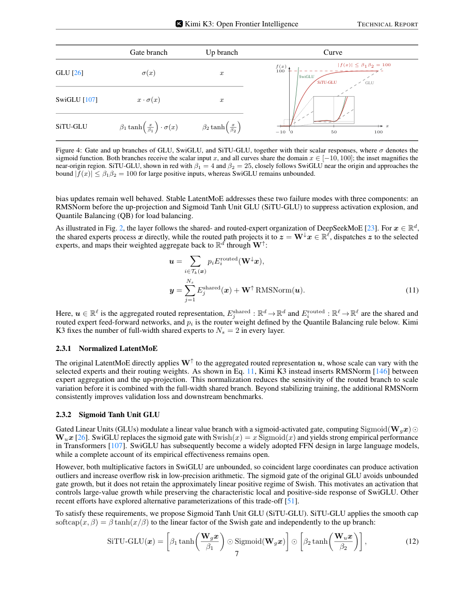

#1
★ 9/10
Kimi K3: Open Frontier Intelligence
Kimi K3：开放的前沿智能模型

图 Figure · Page 7 of paper
🎯 开源2.8T参数MoE大模型，性能媲美顶级商业AI
A 2.8T-parameter open-source AI model that rivals top proprietary systems in reasoning, coding, and vision.
🗣️ 一句话比喻 · Plain-English Analogy就像一家顶级米其林餐厅突然把所有秘方食谱免费公开——不仅菜品质量接近全球最顶尖水平，而且烹饪效率还提升了2.5倍，任何人都可以在家做出几乎同等水准的美食。Think of it like a Michelin three-star restaurant suddenly publishing all its secret recipes for free — the food is nearly as good as the world's very best, AND they've figured out how to cook everything 2.5x faster. Now anyone, anywhere can cook at that level from their own kitchen.
| 维度 | 中文 | English |
|---|---|---|
| ❓ 待解决 的问题 |
训练一个又强大又高效的AI模型极其困难——尤其是当模型规模大到需要数千个GPU协同工作时。现有的开源模型要么能力不够强，要么效率太低，训练成本高得吓人。就像你想造一辆又快又省油的赛车，但大多数方案要么快但费油，要么省油但跑不快。 | Building AI models that are both extremely powerful and efficient is incredibly hard. Most open-source models either fall short in capability or waste huge amounts of computing power during training. It's like trying to build a race car that's both blazing fast AND fuel-efficient — most designs force you to choose one or the other. |
| 💡 解决 的亮点 |
• **Delta注意力 + 注意力残差**：全新的信息传递机制，让模型在处理超长文本时不会"遗忘"早期内容，就像给AI装了更大的工作记忆 • **Stable LatentMoE**：896个专家中每次只激活16个，既保留了超大模型的知识容量，又大幅降低了计算成本 • **扩展效率提升约2.5倍**：比上一代Kimi K2用同样的算力能学到更多，相当于"事半功倍" • **百万token上下文窗口**：能一次性阅读并理解相当于一本厚书的内容，远超大多数同类模型 • **全权重开源发布**：让全球研究者都能免费使用和研究这个前沿模型 | • **Delta Attention + Attention Residuals**: A new way for the model to pass information across very long texts without "forgetting" earlier parts — like giving the AI a bigger, better working memory • **Stable LatentMoE**: Activates only 16 out of 896 specialized "expert" sub-networks per word — massive knowledge capacity at a fraction of the compute cost • **~2.5x scaling efficiency gain** over the previous Kimi K2 — same hardware, dramatically more learning • **1-million-token context window**: Can read and reason over an entire thick novel in one go • **Fully open-sourced weights**: Any researcher worldwide can download and build on this frontier model for free |
| 🧪 实验 内容 |
研究团队在一系列主流评测基准上测试了Kimi K3，涵盖长代码生成（SWE-bench、LiveCodeBench、HumanEval）、数学推理（AIME、MATH）、知识问答（MMLU、GPQA）、自主任务执行（Agentic benchmarks）以及视觉理解（视觉问答、多模态推理）。对比基线包括GPT-5.6 Sol、Claude Fable 5等顶级商业模型，以及其他主流开源模型。 | The team evaluated Kimi K3 across a broad range of standard AI benchmarks: long-horizon coding (SWE-bench, LiveCodeBench, HumanEval), mathematical reasoning (AIME, MATH), world knowledge (MMLU, GPQA), autonomous multi-step task execution (agentic benchmarks), and visual understanding (multimodal reasoning tasks). They compared it against top proprietary models like GPT-5.6 Sol and Claude Fable 5, as well as leading open-source competitors. |
| 📊 实验 结果 |
Kimi K3在多项关键基准上达到前沿水平：在编程、推理、知识、视觉等综合评测中，超越了所有其他被评估的开源和商业模型（仅次于Claude Fable 5和GPT-5.6 Sol）。与上一代Kimi K2相比，整体扩展效率提升约2.5倍，意味着用同等算力可以训练出明显更强的模型。模型采用896个路由专家、每token激活16个，总参数量2.8万亿，激活参数约1040亿。 | Kimi K3 achieves frontier-level performance across all major benchmark categories — coding, reasoning, knowledge, and vision — outperforming all other open-source and proprietary models in the evaluation suite, trailing only Claude Fable 5 and GPT-5.6 Sol. It delivers approximately 2.5x better scaling efficiency compared to its predecessor Kimi K2, meaning far stronger performance for the same compute budget. The model runs with 2.8 trillion total parameters but only activates ~104 billion per token, keeping inference costs manageable. |
| 🏁 结论 | Kimi K3证明了开源模型也能达到与顶级商业AI几乎相当的性能水平，同时通过一系列架构和训练创新将计算效率提升了约2.5倍。全权重开源发布为全球AI研究和应用生态带来了重要的"平权"价值。 | Kimi K3 proves that open-source AI can reach near-frontier capability — matching or exceeding most commercial models — while achieving roughly 2.5x better compute efficiency through architectural and training innovations. By releasing full model weights publicly, it democratizes access to frontier-level AI for researchers and developers worldwide. |
| 🔗 论文 链接 |
arXiv: 2607.24653 · 📥 PDF | |
⚙️ Method · 方法详解
Kimi K3采用"混合专家"架构——想象一个拥有896位专家顾问的大公司，每处理一个问题时只调用最合适的16位，这样既保留了所有专家的知识，又不用每次都让所有人同时工作。此外，新设计的"Delta注意力"让模型在阅读长文本时能更好地记住和关联前后内容，就像在书上做标记一样。训练后期大量使用强化学习，让模型在编程、推理、自主任务执行等多个领域反复练习和自我纠错，就像通过大量刷题来提升解题能力。整个训练系统针对万卡GPU集群进行了深度优化，实现了专家均衡分配和高效显存管理。
Kimi K3 uses a "Mixture of Experts" design — imagine a company with 896 specialist consultants where only the 16 best-suited ones are called in for each task, so you get the full knowledge base without paying everyone to work at once. A new "Delta Attention" mechanism helps the model remember and connect information across very long texts, like having color-coded sticky notes throughout a giant document. After initial training, the team used reinforcement learning — essentially having the model practice thousands of real coding, reasoning, and multi-step tasks and learn from its own mistakes. The entire system was engineered for massive GPU clusters with balanced workload distribution and smart memory management.
📐 Key Formulas · 关键公式
\[\text{Activated Params} = 16 \text{ experts} / 896 \text{ total routed experts, plus shared experts}\]
💡 每处理一个词（token），模型从896个路由专家中只激活16个，加上共享专家部分，合计约1040亿激活参数——保证效率的同时维持超大模型的知识容量
For each word/token processed, only 16 out of 896 specialized sub-networks ('experts') are activated, giving ~104B active parameters — keeping compute costs low while retaining the knowledge of a 2.8T parameter model
\[\text{Scaling Efficiency} \approx 2.5\times \text{ over Kimi K2}\]
💡 与上一代K2相比，K3用同样的计算资源可以训练出约2.5倍更强的模型，这是架构和训练配方综合优化的结果
Kimi K3 gets approximately 2.5 times more 'learning per compute dollar' compared to its predecessor K2, thanks to combined improvements in model architecture and training recipes
🌟 Why It Matters · 为什么重要
顶尖AI模型长期被少数科技巨头垄断，开源社区难以企及。Kimi K3的发布打破了这一格局，让全球开发者和研究者都能免费获得接近最强水平的AI能力，可能加速医疗、教育、科研等领域的AI应用普及。同时，其2.5倍效率提升意味着同样的算力可以做到更多，对降低AI训练成本、推动可持续发展具有现实意义。
For a long time, the most powerful AI models have been locked behind expensive APIs controlled by a handful of tech giants. Kimi K3's open release gives any developer, researcher, or startup free access to near-frontier AI — potentially accelerating breakthroughs in medicine, education, and science. Its 2.5x efficiency improvement also means future AI can do much more with the same energy and hardware, making powerful AI more sustainable and accessible.